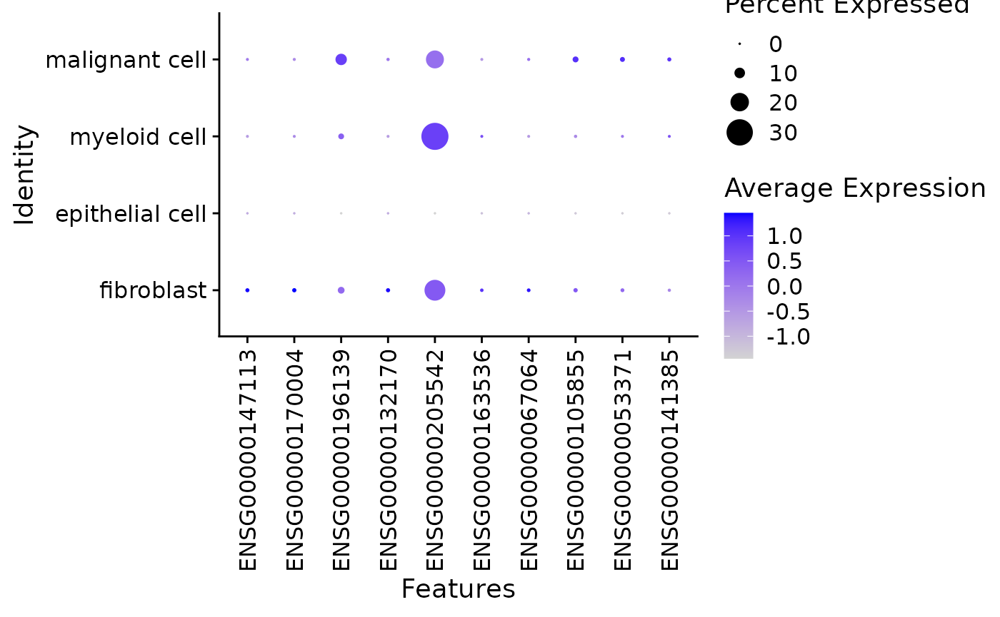

This vignette introduces the basic {laminr} workflow.
To learn more about LaminDB, please refer to the online documentation https://docs.lamin.ai/.
Setup
Install {laminr} from CRAN:
install.packages("laminr", dependencies = TRUE)Set up the Python environment:
laminr::install_lamindb()Set the default LaminDB instance:
laminr::lamin_connect("<owner>/<name>")This instance acts as the default instance for everything that follows. Any data and tracking information will be added to it.
See vignette("setup", package = "laminr") for more
details.
For this vignette we use a temporary test instance.
lamin_init_temp(name = "laminr-intro", modules = c("bionty"))This vignette requires the bionty Python package to be available.
Import
To start working with {laminr}, import the lamindb module:
ln <- import_module("lamindb")
#> → connected lamindb: testuser1/laminr-intro-20250321062015This is equivalent to import lamindb as ln in
Python.
Walkthrough
This section of the vignette reproduces the walkthrough from the LaminDB Introduction guide. The equivalent {laminr} code is included here, for the related text see the associated links.
See https://docs.lamin.ai/guide#walkthrough.
Transforms
See https://docs.lamin.ai/guide#transforms.
ln <- import_module("lamindb")
ln$track()
#> → created Transform('ydVJ5KpQQ9Er0000'), started new Run('Hcgwtf05...') at 2025-03-21 06:20:34 UTC
ln$Transform$df()
#> uid key description type source_code hash
#> 1 ydVJ5KpQQ9Er0000 introduction.Rmd introduction.Rmd notebook <NA> <NA>
#> reference reference_type space_id _template_id version is_latest
#> 1 <NA> <NA> 1 <NA> <NA> TRUE
#> created_at created_by_id _aux _branch_code
#> 1 2025-03-21 06:20:34 1 <NA> 1
ln$Run$df()
#> uid name started_at finished_at reference
#> 1 Hcgwtf05tdVNuDDGwqQ7 <NA> 2025-03-21 06:20:34 <NA> <NA>
#> reference_type _is_consecutive _status_code space_id transform_id report_id
#> 1 <NA> <NA> 0 1 1 <NA>
#> _logfile_id environment_id initiated_by_run_id created_at
#> 1 <NA> <NA> <NA> 2025-03-21 06:20:34
#> created_by_id _aux _branch_code
#> 1 1 <NA> 1Artifacts
Artifacts are objects that bundle data and associated metadata. An artifact can be any file or folder but is typically a dataset.
See https://docs.lamin.ai/guide#artifacts.
df <- ln$core$datasets$small_dataset1(otype = "DataFrame", with_typo = TRUE)
df
#> ENSG00000153563 ENSG00000010610 ENSG00000170458 perturbation
#> sample1 1 3 5 DMSO
#> sample2 2 4 6 IFNJ
#> sample3 3 5 7 DMSO
#> sample_note cell_type_by_expert cell_type_by_model
#> sample1 was ok B cell B cell
#> sample2 looks naah CD8-positive, alpha-beta T cell T cell
#> sample3 pretty! 🤩 CD8-positive, alpha-beta T cell T cell
#> assay_oid concentration treatment_time_h donor
#> sample1 EFO:0008913 0.1% 24 D0001
#> sample2 EFO:0008913 200 nM 24 D0002
#> sample3 EFO:0008913 0.1% 6 <NA>
artifact <- ln$Artifact$from_df(df, key = "my_datasets/rnaseq1.parquet")$save()
artifact$describe()
#> Artifact .parquet/DataFrame
#> └── General
#> ├── .uid = 'SzSFxqBb7UOBssvh0000'
#> ├── .key = 'my_datasets/rnaseq1.parquet'
#> ├── .size = 8530
#> ├── .hash = 'hDTNFwEPy7pY1EKnOHog2A'
#> ├── .n_observations = 3
#> ├── .path =
#> │ /tmp/Rtmpd66h5i/laminr-intro-20250321062015/.lamindb/SzSFxqBb7UOBssvh000
#> │ 0.parquet
#> ├── .created_by = testuser1 (Test User1)
#> ├── .created_at = 2025-03-21 06:20:35
#> └── .transform = 'introduction.Rmd'
artifact$cache()
#> [1] "/tmp/Rtmpd66h5i/laminr-intro-20250321062015/.lamindb/SzSFxqBb7UOBssvh0000.parquet"
dataset <- artifact$open()
as.data.frame(dataset)
#> # A tibble: 3 × 12
#> ENSG00000153563 ENSG00000010610 ENSG00000170458 perturbation sample_note
#> <dbl> <dbl> <dbl> <fct> <chr>
#> 1 1 3 5 DMSO was ok
#> 2 2 4 6 IFNJ looks naah
#> 3 3 5 7 DMSO pretty! 🤩
#> # ℹ 7 more variables: cell_type_by_expert <fct>, cell_type_by_model <fct>,
#> # assay_oid <fct>, concentration <chr>, treatment_time_h <dbl>, donor <chr>,
#> # `__index_level_0__` <chr>
artifact$load()
#> ENSG00000153563 ENSG00000010610 ENSG00000170458 perturbation
#> sample1 1 3 5 DMSO
#> sample2 2 4 6 IFNJ
#> sample3 3 5 7 DMSO
#> sample_note cell_type_by_expert cell_type_by_model
#> sample1 was ok B cell B cell
#> sample2 looks naah CD8-positive, alpha-beta T cell T cell
#> sample3 pretty! 🤩 CD8-positive, alpha-beta T cell T cell
#> assay_oid concentration treatment_time_h donor
#> sample1 EFO:0008913 0.1% 24 D0001
#> sample2 EFO:0008913 200 nM 24 D0002
#> sample3 EFO:0008913 0.1% 6 <NA>
artifact$view_lineage()
#> ✖ `view_lineage()` is not yet implemented. Please view the lineage in the web interface.
df_typo <- df
levels(df$perturbation) <- c("DMSO", "IFNG")
df["sample2", "perturbation"] <- "IFNG"
artifact <- ln$Artifact$from_df(df, key = "my_datasets/rnaseq1.parquet")$save()
#> → creating new artifact version for key='my_datasets/rnaseq1.parquet' (storage: '/tmp/Rtmpd66h5i/laminr-intro-20250321062015')
artifact$versions$df()
#> uid key description suffix kind
#> 1 SzSFxqBb7UOBssvh0000 my_datasets/rnaseq1.parquet <NA> .parquet dataset
#> 2 SzSFxqBb7UOBssvh0001 my_datasets/rnaseq1.parquet <NA> .parquet dataset
#> otype size hash n_files n_observations _hash_type
#> 1 DataFrame 8530 hDTNFwEPy7pY1EKnOHog2A <NA> 3 md5
#> 2 DataFrame 8530 RVElCjRCfyOAxbLNDEAMOg <NA> 3 md5
#> _key_is_virtual _overwrite_versions space_id storage_id schema_id version
#> 1 TRUE FALSE 1 1 <NA> <NA>
#> 2 TRUE FALSE 1 1 <NA> <NA>
#> is_latest run_id created_at created_by_id _aux _branch_code
#> 1 FALSE 1 2025-03-21 06:20:35 1 <NA> 1
#> 2 TRUE 1 2025-03-21 06:20:36 1 <NA> 1Labels
See https://docs.lamin.ai/guide#labels.
bt <- import_module("bionty")
experiment_type <- ln$ULabel(name = "Experiment", is_type = TRUE)$save()
candidate_marker_experiment <- ln$ULabel(
name = "Candidate marker experiment", type = experiment_type
)$save()
artifact$ulabels$add(candidate_marker_experiment)
cell_type <- bt$CellType$from_source(name = "effector T cell")$save()
artifact$cell_types$add(cell_type)
artifact$describe()
#> Artifact .parquet/DataFrame
#> ├── General
#> │ ├── .uid = 'SzSFxqBb7UOBssvh0001'
#> │ ├── .key = 'my_datasets/rnaseq1.parquet'
#> │ ├── .size = 8530
#> │ ├── .hash = 'RVElCjRCfyOAxbLNDEAMOg'
#> │ ├── .n_observations = 3
#> │ ├── .path =
#> │ │ /tmp/Rtmpd66h5i/laminr-intro-20250321062015/.lamindb/SzSFxqBb7UOBssvh000
#> │ │ 1.parquet
#> │ ├── .created_by = testuser1 (Test User1)
#> │ ├── .created_at = 2025-03-21 06:20:36
#> │ └── .transform = 'introduction.Rmd'
#> └── Labels
#> └── .cell_types bionty.CellType effector T cell
#> .ulabels ULabel Candidate marker experimentRegistries
See https://docs.lamin.ai/guide#registries.
ln$ULabel$df()
#> uid name is_type description reference
#> 2 s5wTTEdz Candidate marker experiment FALSE <NA> <NA>
#> 1 ezhZpBJ5 Experiment TRUE <NA> <NA>
#> reference_type space_id type_id run_id created_at created_by_id _aux
#> 2 <NA> 1 1 1 2025-03-21 06:20:36 1 <NA>
#> 1 <NA> 1 NaN 1 2025-03-21 06:20:36 1 <NA>
#> _branch_code
#> 2 1
#> 1 1
ln$Artifact
#> Artifact
#> Simple fields
#> .uid: CharField
#> .key: CharField
#> .description: CharField
#> .suffix: CharField
#> .kind: CharField
#> .otype: CharField
#> .size: BigIntegerField
#> .hash: CharField
#> .n_files: BigIntegerField
#> .n_observations: BigIntegerField
#> .version: CharField
#> .is_latest: BooleanField
#> .created_at: DateTimeField
#> .updated_at: DateTimeField
#> Relational fields
#> .space: Space
#> .storage: Storage
#> .run: Run
#> .schema: Schema
#> .created_by: User
#> .ulabels: ULabel
#> .input_of_runs: Run
#> .feature_sets: Schema
#> .collections: Collection
#> .references: Reference
#> .projects: Project
#> Bionty fields
#> .organisms: bionty.Organism
#> .genes: bionty.Gene
#> .proteins: bionty.Protein
#> .cell_markers: bionty.CellMarker
#> .tissues: bionty.Tissue
#> .cell_types: bionty.CellType
#> .diseases: bionty.Disease
#> .cell_lines: bionty.CellLine
#> .phenotypes: bionty.Phenotype
#> .pathways: bionty.Pathway
#> .experimental_factors: bionty.ExperimentalFactor
#> .developmental_stages: bionty.DevelopmentalStage
#> .ethnicities: bionty.Ethnicity
#> signature: (*args, **kwargs)Query & search
See https://docs.lamin.ai/guide#query-search.
transform <- ln$Transform$get(key = "introduction.Rmd")
ln$Artifact$filter(key__startswith = "my_datasets/")$df()
#> uid key description suffix kind
#> 1 SzSFxqBb7UOBssvh0000 my_datasets/rnaseq1.parquet <NA> .parquet dataset
#> 2 SzSFxqBb7UOBssvh0001 my_datasets/rnaseq1.parquet <NA> .parquet dataset
#> otype size hash n_files n_observations _hash_type
#> 1 DataFrame 8530 hDTNFwEPy7pY1EKnOHog2A <NA> 3 md5
#> 2 DataFrame 8530 RVElCjRCfyOAxbLNDEAMOg <NA> 3 md5
#> _key_is_virtual _overwrite_versions space_id storage_id schema_id version
#> 1 TRUE FALSE 1 1 <NA> <NA>
#> 2 TRUE FALSE 1 1 <NA> <NA>
#> is_latest run_id created_at created_by_id _aux _branch_code
#> 1 FALSE 1 2025-03-21 06:20:35 1 <NA> 1
#> 2 TRUE 1 2025-03-21 06:20:36 1 <NA> 1
artifacts <- ln$Artifact$filter(transform = transform)$all()
artifacts <- ln$Artifact$filter(
transform__description__icontains = "intro", ulabels = candidate_marker_experiment
)$all()
ln$Transform$search("intro")$df()
#> uid key description type source_code hash
#> 1 ydVJ5KpQQ9Er0000 introduction.Rmd introduction.Rmd notebook <NA> <NA>
#> reference reference_type space_id _template_id version is_latest
#> 1 <NA> <NA> 1 <NA> <NA> TRUE
#> created_at created_by_id _aux _branch_code
#> 1 2025-03-21 06:20:34 1 <NA> 1
ulabels <- ln$ULabel$lookup()
cell_types <- bt$CellType$lookup()Features
See https://docs.lamin.ai/guide#features.
ln$Feature(name = "temperature", dtype = "float")$save()
#> Feature(uid='oSMiZXpJWxxu', name='temperature', dtype='float', array_rank=0, array_size=0, space_id=1, created_by_id=1, run_id=1, created_at=2025-03-21 06:20:38 UTC)
ln$Feature(name = "experiment", dtype = ln$ULabel)$save()
#> Feature(uid='E3QuziaE4mbf', name='experiment', dtype='cat[ULabel]', array_rank=0, array_size=0, space_id=1, created_by_id=1, run_id=1, created_at=2025-03-21 06:20:38 UTC)
artifact$features$add_values(
list("temperature" = 21.6, "experiment" = "Candidate marker experiment")
)
artifact$describe()
#> Artifact .parquet/DataFrame
#> ├── General
#> │ ├── .uid = 'SzSFxqBb7UOBssvh0001'
#> │ ├── .key = 'my_datasets/rnaseq1.parquet'
#> │ ├── .size = 8530
#> │ ├── .hash = 'RVElCjRCfyOAxbLNDEAMOg'
#> │ ├── .n_observations = 3
#> │ ├── .path =
#> │ │ /tmp/Rtmpd66h5i/laminr-intro-20250321062015/.lamindb/SzSFxqBb7UOBssvh000
#> │ │ 1.parquet
#> │ ├── .created_by = testuser1 (Test User1)
#> │ ├── .created_at = 2025-03-21 06:20:36
#> │ └── .transform = 'introduction.Rmd'
#> ├── Linked features
#> │ └── experiment cat[ULabel] Candidate marker experiment
#> │ temperature float 21.6
#> └── Labels
#> └── .cell_types bionty.CellType effector T cell
#> .ulabels ULabel Candidate marker experiment
ln$Artifact$features$filter(experiment__contains = "marker experiment")$df()
#> uid key description suffix kind
#> 2 SzSFxqBb7UOBssvh0001 my_datasets/rnaseq1.parquet <NA> .parquet dataset
#> otype size hash n_files n_observations _hash_type
#> 2 DataFrame 8530 RVElCjRCfyOAxbLNDEAMOg <NA> 3 md5
#> _key_is_virtual _overwrite_versions space_id storage_id schema_id version
#> 2 TRUE FALSE 1 1 <NA> <NA>
#> is_latest run_id created_at created_by_id _aux _branch_code
#> 2 TRUE 1 2025-03-21 06:20:36 1 <NA> 1Key use cases
This section of reproduces the key use cases from the LaminDB Introduction guide.
See https://docs.lamin.ai/guide#key-use-cases.
Understand data lineage
See https://docs.lamin.ai/guide#understand-data-lineage.
artifact$view_lineage()
#> ✖ `view_lineage()` is not yet implemented. Please view the lineage in the web interface.
transform$view_lineage()
#> ✖ `view_lineage()` is not yet implemented. Please view the lineage in the web interface.
# Example only, not run
ln <- import_module("lamindb")
ln$track()
ln$finish()
# lamin load https://lamin.ai/laminlabs/lamindata/transform/13VINnFk89PE0004Curate datasets
See https://docs.lamin.ai/introduction#curate-datasets.
perturbation_type <- ln$ULabel(name = "Perturbation", is_type = TRUE)$save()
ln$ULabel(name = "DMSO", type = perturbation_type)$save()
#> ULabel(uid='TIKDVEta', name='DMSO', is_type=False, space_id=1, created_by_id=1, run_id=1, type_id=3, created_at=2025-03-21 06:20:39 UTC)
ln$ULabel(name = "IFNG", type = perturbation_type)$save()
#> ULabel(uid='2qnRxVQA', name='IFNG', is_type=False, space_id=1, created_by_id=1, run_id=1, type_id=3, created_at=2025-03-21 06:20:39 UTC)
# Load Python built ins to get access to dtypes
py_builtins <- reticulate::import_builtins()
schema <- ln$Schema(
name = "My DataFrame schema",
features = list(
# NOTE: These have dtype=int in the original guide
ln$Feature(name = "ENSG00000153563", dtype = py_builtins$float)$save(),
ln$Feature(name = "ENSG00000010610", dtype = py_builtins$float)$save(),
ln$Feature(name = "ENSG00000170458", dtype = py_builtins$float)$save(),
ln$Feature(name = "perturbation", dtype = ln$ULabel)$save()
)
)$save()
curator <- ln$curators$DataFrameCurator(df, schema)
artifact <- curator$save_artifact(key = "my_curated_dataset.parquet")
#> ✓ "perturbation" is validated against ULabel.name
#> → returning existing artifact with same hash: Artifact(uid='SzSFxqBb7UOBssvh0001', is_latest=True, key='my_datasets/rnaseq1.parquet', suffix='.parquet', kind='dataset', otype='DataFrame', size=8530, hash='RVElCjRCfyOAxbLNDEAMOg', n_observations=3, space_id=1, storage_id=1, run_id=1, created_by_id=1, created_at=2025-03-21 06:20:36 UTC); to track this artifact as an input, use: ln.Artifact.get()
#> ! key my_datasets/rnaseq1.parquet on existing artifact differs from passed key my_curated_dataset.parquet
#> ✓ 4 unique terms (36.40%) are validated for name
#> ! 7 unique terms (63.60%) are not validated for name: 'sample_note', 'cell_type_by_expert', 'cell_type_by_model', 'assay_oid', 'concentration', 'treatment_time_h', 'donor'
#> ✓ loaded 4 Feature records matching name: 'ENSG00000153563', 'ENSG00000010610', 'ENSG00000170458', 'perturbation'
#> ! did not create Feature records for 7 non-validated names: 'assay_oid', 'cell_type_by_expert', 'cell_type_by_model', 'concentration', 'donor', 'sample_note', 'treatment_time_h'
#> → returning existing schema with same hash: Schema(uid='uI91AiokUCU1kCADmSvU', name='My DataFrame schema', n=4, itype='Feature', is_type=False, hash='dIqXJMmvb9E_3QY1WyDlOA', minimal_set=True, ordered_set=False, maximal_set=False, space_id=1, created_by_id=1, run_id=1, created_at=2025-03-21 06:20:39 UTC)
#> ! updated otype from None to DataFrame
artifact$describe()
#> Artifact .parquet/DataFrame
#> ├── General
#> │ ├── .uid = 'SzSFxqBb7UOBssvh0001'
#> │ ├── .key = 'my_datasets/rnaseq1.parquet'
#> │ ├── .size = 8530
#> │ ├── .hash = 'RVElCjRCfyOAxbLNDEAMOg'
#> │ ├── .n_observations = 3
#> │ ├── .path =
#> │ │ /tmp/Rtmpd66h5i/laminr-intro-20250321062015/.lamindb/SzSFxqBb7UOBssvh000
#> │ │ 1.parquet
#> │ ├── .created_by = testuser1 (Test User1)
#> │ ├── .created_at = 2025-03-21 06:20:36
#> │ └── .transform = 'introduction.Rmd'
#> ├── Dataset features/.feature_sets
#> │ └── columns • 4 [Feature]
#> │ perturbation cat[ULabel] DMSO, IFNG
#> │ ENSG00000153563 float
#> │ ENSG00000010610 float
#> │ ENSG00000170458 float
#> ├── Linked features
#> │ └── experiment cat[ULabel] Candidate marker experiment
#> │ temperature float 21.6
#> └── Labels
#> └── .cell_types bionty.CellType effector T cell
#> .ulabels ULabel Candidate marker experiment, DMS…
ln$Artifact$get(ulabels__name = "IFNG")
#> Artifact(uid='SzSFxqBb7UOBssvh0001', is_latest=True, key='my_datasets/rnaseq1.parquet', suffix='.parquet', kind='dataset', otype='DataFrame', size=8530, hash='RVElCjRCfyOAxbLNDEAMOg', n_observations=3, space_id=1, storage_id=1, run_id=1, schema_id=1, created_by_id=1, created_at=2025-03-21 06:20:36 UTC)
curator <- ln$curators$DataFrameCurator(df_typo, schema)
tryCatch(
curator$validate(),
error = function(err) {
cat(conditionMessage(err))
}
)
#> • mapping "perturbation" on ULabel.name
#> ! 1 term is not validated: 'IFNJ'
#> → fix typos, remove non-existent values, or save terms via .add_new_from("perturbation")
#> lamindb.errors.ValidationError: 1 term is not validated: 'IFNJ'
#> → fix typos, remove non-existent values, or save terms via .add_new_from("perturbation")
#> Run `reticulate::py_last_error()` for details.Manage biological registries
See https://docs.lamin.ai/introduction#manage-biological-registries.
cell_types <- bt$CellType$public()
cell_types
#> PublicOntology
#> Entity: CellType
#> Organism: all
#> Source: cl, 2024-08-16
#> #terms: 2959
cell_types$search("gamma-delta T cell") |> head(2)
#> name
#> CL:0000798 gamma-delta T cell
#> CL:4033072 cycling gamma-delta T cell
#> definition
#> CL:0000798 A T Cell That Expresses A Gamma-Delta T Cell Receptor Complex.
#> CL:4033072 A(N) Gamma-Delta T Cell That Is Cycling.
#> synonyms
#> CL:0000798 gamma-delta T-cell|gamma-delta T lymphocyte|gammadelta T cell|gamma-delta T-lymphocyte
#> CL:4033072 proliferating gamma-delta T cell
#> parents
#> CL:0000798 CL:0000084
#> CL:4033072 CL:4033069, CL:0000798
var_schema <- ln$Schema(
name = "my_var_schema",
itype = bt$Gene$ensembl_gene_id,
dtype = py_builtins$float
)$save()
obs_schema <- ln$Schema(
name = "my_obs_schema",
features = list(
ln$Feature(name = "perturbation", dtype = ln$ULabel)$save()
)
)$save()
#> → returning existing Feature record with same name: 'perturbation'
anndata_schema <- ln$Schema(
name = "my_anndata_schema",
otype = "AnnData",
components = list("obs" = obs_schema, "var" = var_schema)
)$save()
library(anndata)
adata <- AnnData(
df[c("ENSG00000153563", "ENSG00000010610", "ENSG00000170458")],
obs = df[, "perturbation", drop = FALSE]
)
curator <- ln$curators$AnnDataCurator(adata, anndata_schema)
#> • saving validated records of 'columns'
#> ✓ added 3 records from public with Gene.ensembl_gene_id for "columns": 'ENSG00000170458', 'ENSG00000153563', 'ENSG00000010610'
artifact <- curator$save_artifact(description = "my RNA-seq")
#> ✓ "perturbation" is validated against ULabel.name
#> • path content will be copied to default storage upon `save()` with key `None` ('.lamindb/DXEssPmhhKMMtVaE0000.h5ad')
#> ✓ storing artifact 'DXEssPmhhKMMtVaE0000' at '/tmp/Rtmpd66h5i/laminr-intro-20250321062015/.lamindb/DXEssPmhhKMMtVaE0000.h5ad'
#> • parsing feature names of X stored in slot 'var'
#> ✓ 3 unique terms (100.00%) are validated for ensembl_gene_id
#> ✓ linked: Schema(uid='YQ37PY1AfbAOBQDFpv8p', n=3, dtype='float', itype='bionty.Gene', is_type=False, hash='f2UVeHefaZxXFjmUwo9Ozw', minimal_set=True, ordered_set=False, maximal_set=False, space_id=1, created_by_id=1, run_id=1, created_at=<django.db.models.expressions.DatabaseDefault object at 0x7f9d2fa89a60>)
#> • parsing feature names of slot 'obs'
#> ✓ 1 unique term (100.00%) is validated for name
#> → returning existing schema with same hash: Schema(uid='peoj388T6HkYgQoZgI4o', name='my_obs_schema', n=1, itype='Feature', is_type=False, hash='NfC-f0LOFe3SDZtZ11IC7A', minimal_set=True, ordered_set=False, maximal_set=False, space_id=1, created_by_id=1, run_id=1, created_at=2025-03-21 06:20:41 UTC)
#> ! updated otype from None to DataFrame
#> ✓ linked: Schema(uid='peoj388T6HkYgQoZgI4o', name='my_obs_schema', n=1, itype='Feature', is_type=False, otype='DataFrame', hash='NfC-f0LOFe3SDZtZ11IC7A', minimal_set=True, ordered_set=False, maximal_set=False, space_id=1, created_by_id=1, run_id=1, created_at=2025-03-21 06:20:41 UTC)
#> ✓ saved 1 feature set for slot: 'var'
artifact$describe()
#> Artifact .h5ad/AnnData
#> ├── General
#> │ ├── .uid = 'DXEssPmhhKMMtVaE0000'
#> │ ├── .size = 19240
#> │ ├── .hash = 'gO44MDqttaaKNyBLVM-zzA'
#> │ ├── .n_observations = 3
#> │ ├── .path =
#> │ │ /tmp/Rtmpd66h5i/laminr-intro-20250321062015/.lamindb/DXEssPmhhKMMtVaE000
#> │ │ 0.h5ad
#> │ ├── .created_by = testuser1 (Test User1)
#> │ ├── .created_at = 2025-03-21 06:20:43
#> │ └── .transform = 'introduction.Rmd'
#> ├── Dataset features/.feature_sets
#> │ ├── var • 3 [bionty.Gene]
#> │ │ CD14 float
#> │ │ CD8A float
#> │ │ CD4 float
#> │ └── obs • 1 [Feature]
#> │ perturbation cat[ULabel] DMSO, IFNG
#> └── Labels
#> └── .ulabels ULabel DMSO, IFNG
genes <- bt$Gene$filter(organism__name = "human")$lookup()
feature_sets <- ln$FeatureSet$filter(genes = genes$cd8a)$all()
ln$Artifact$filter(feature_sets__in = feature_sets)$df()
#> uid key description suffix kind otype size
#> 3 DXEssPmhhKMMtVaE0000 <NA> my RNA-seq .h5ad dataset AnnData 19240
#> hash n_files n_observations _hash_type _key_is_virtual
#> 3 gO44MDqttaaKNyBLVM-zzA <NA> 3 md5 TRUE
#> _overwrite_versions space_id storage_id schema_id version is_latest run_id
#> 3 FALSE 1 1 4 <NA> TRUE 1
#> created_at created_by_id _aux _branch_code
#> 3 2025-03-21 06:20:43 1 <NA> 1
neuron <- bt$CellType$from_source(name = "neuron")$save()
#> ✓ created 1 CellType record from Bionty matching name: 'neuron'
#> ✓ created 3 CellType records from Bionty matching ontology_id: 'CL:0002319', 'CL:0000404', 'CL:0000393'
new_cell_state <- bt$CellType(
name = "my neuron cell state", description = "explains X"
)$save()
new_cell_state$parents$add(neuron)
new_cell_state$view_parents(distance = 2)Scale learning
See https://docs.lamin.ai/introduction#scale-learning.
df2 <- ln$core$datasets$small_dataset2(otype = "DataFrame")
adata <- AnnData(
df2[c("ENSG00000153563", "ENSG00000010610", "ENSG00000004468")],
obs = df2[, "perturbation", drop = FALSE]
)
curator <- ln$curators$AnnDataCurator(adata, anndata_schema)
#> • saving validated records of 'columns'
#> ✓ added 1 record from public with Gene.ensembl_gene_id for "columns": 'ENSG00000004468'
artifact2 <- curator$save_artifact(key = "my_datasets/my_rnaseq2.h5ad")
#> ✓ "perturbation" is validated against ULabel.name
#> • path content will be copied to default storage upon `save()` with key 'my_datasets/my_rnaseq2.h5ad'
#> ✓ storing artifact 'HpAEI7URJxcJ7j1Y0000' at '/tmp/Rtmpd66h5i/laminr-intro-20250321062015/.lamindb/HpAEI7URJxcJ7j1Y0000.h5ad'
#> • parsing feature names of X stored in slot 'var'
#> ✓ 3 unique terms (100.00%) are validated for ensembl_gene_id
#> ✓ linked: Schema(uid='T6pqgiZGgMYP7h9TFilB', n=3, dtype='float', itype='bionty.Gene', is_type=False, hash='QW2rHuIo5-eGNZbRxHMDCw', minimal_set=True, ordered_set=False, maximal_set=False, space_id=1, created_by_id=1, run_id=1, created_at=<django.db.models.expressions.DatabaseDefault object at 0x7f9d247bb080>)
#> • parsing feature names of slot 'obs'
#> ✓ 1 unique term (100.00%) is validated for name
#> → returning existing schema with same hash: Schema(uid='peoj388T6HkYgQoZgI4o', name='my_obs_schema', n=1, itype='Feature', is_type=False, hash='NfC-f0LOFe3SDZtZ11IC7A', minimal_set=True, ordered_set=False, maximal_set=False, space_id=1, created_by_id=1, run_id=1, created_at=2025-03-21 06:20:41 UTC)
#> ! updated otype from None to DataFrame
#> ✓ linked: Schema(uid='peoj388T6HkYgQoZgI4o', name='my_obs_schema', n=1, itype='Feature', is_type=False, otype='DataFrame', hash='NfC-f0LOFe3SDZtZ11IC7A', minimal_set=True, ordered_set=False, maximal_set=False, space_id=1, created_by_id=1, run_id=1, created_at=2025-03-21 06:20:41 UTC)
#> ✓ saved 1 feature set for slot: 'var'
collection <- ln$Collection(
list(artifact, artifact2),
key = "my-RNA-seq-collection"
)$save()
collection$describe()
#> Collection
#> └── General
#> ├── .uid = 'eE7oETqN8C1gGs0k0000'
#> ├── .key = 'my-RNA-seq-collection'
#> ├── .hash = 'DbgO9hDdS-KOydwDZDLp3g'
#> ├── .created_by = testuser1 (Test User1)
#> ├── .created_at = 2025-03-21 06:20:47
#> └── .transform = 'introduction.Rmd'
collection$view_lineage()
#> ✖ `view_lineage()` is not yet implemented. Please view the lineage in the web interface.
collection$load()
#> AnnData object with n_obs × n_vars = 6 × 4
#> obs: 'perturbation', 'artifact_uid'
collection$artifacts$all()
#> <QuerySet [Artifact(uid='DXEssPmhhKMMtVaE0000', is_latest=True, description='my RNA-seq', suffix='.h5ad', kind='dataset', otype='AnnData', size=19240, hash='gO44MDqttaaKNyBLVM-zzA', n_observations=3, space_id=1, storage_id=1, run_id=1, schema_id=4, created_by_id=1, created_at=2025-03-21 06:20:43 UTC), Artifact(uid='HpAEI7URJxcJ7j1Y0000', is_latest=True, key='my_datasets/my_rnaseq2.h5ad', suffix='.h5ad', kind='dataset', otype='AnnData', size=19240, hash='Ti7bcnIOlk0fIt2TFW_VAw', n_observations=3, space_id=1, storage_id=1, run_id=1, schema_id=4, created_by_id=1, created_at=2025-03-21 06:20:46 UTC)]>
collection$artifacts$df()
#> uid key description suffix kind
#> 3 DXEssPmhhKMMtVaE0000 <NA> my RNA-seq .h5ad dataset
#> 4 HpAEI7URJxcJ7j1Y0000 my_datasets/my_rnaseq2.h5ad <NA> .h5ad dataset
#> otype size hash n_files n_observations _hash_type
#> 3 AnnData 19240 gO44MDqttaaKNyBLVM-zzA <NA> 3 md5
#> 4 AnnData 19240 Ti7bcnIOlk0fIt2TFW_VAw <NA> 3 md5
#> _key_is_virtual _overwrite_versions space_id storage_id schema_id version
#> 3 TRUE FALSE 1 1 4 <NA>
#> 4 TRUE FALSE 1 1 4 <NA>
#> is_latest run_id created_at created_by_id _aux _branch_code
#> 3 TRUE 1 2025-03-21 06:20:43 1 <NA> 1
#> 4 TRUE 1 2025-03-21 06:20:46 1 <NA> 1Other examples
This section contains some additional examples of using {laminr}.
Download a dataset form another instance
This examples shows how to get an artifact from another instance (“laminlabs/cellxgene”).
artifact <- ln$Artifact$using("laminlabs/cellxgene")$get("7dVluLROpalzEh8mNyxk")
artifact
#> Artifact(uid='7dVluLROpalzEh8mNyxk', version='2023-12-15', is_latest=True, key='cell-census/2023-12-15/h5ads/02faf712-92d4-4589-bec7-13105059cf86.h5ad', description='Renal cell carcinoma, pre aPD1, kidney Puck_200727_12', suffix='.h5ad', otype='AnnData', size=13997860, hash='YNYuokfAoDFxdaRILjmU9w', n_observations=17612, space_id=1, storage_id=2, run_id=22, created_by_id=1, created_at=2024-01-11 09:13:23 UTC)Tip
You can view detailed information about this dataset on LaminHub: https://lamin.ai/laminlabs/cellxgene/artifact/7dVluLROpalzEh8mNyxk.
You can search and query more CELLxGENE datasets here: https://lamin.ai/laminlabs/cellxgene/artifacts.
To download the dataset and load it into memory, run:
adata <- artifact$load()
#> ... synchronizing 02faf712-92d4-4589-bec7-13105059cf86.h5ad: 0.0%... synchronizing 02faf712-92d4-4589-bec7-13105059cf86.h5ad: 0.1%... synchronizing 02faf712-92d4-4589-bec7-13105059cf86.h5ad: 0.6%... synchronizing 02faf712-92d4-4589-bec7-13105059cf86.h5ad: 0.8%... synchronizing 02faf712-92d4-4589-bec7-13105059cf86.h5ad: 1.3%... synchronizing 02faf712-92d4-4589-bec7-13105059cf86.h5ad: 1.8%... synchronizing 02faf712-92d4-4589-bec7-13105059cf86.h5ad: 2.2%... synchronizing 02faf712-92d4-4589-bec7-13105059cf86.h5ad: 2.7%... synchronizing 02faf712-92d4-4589-bec7-13105059cf86.h5ad: 3.2%... synchronizing 02faf712-92d4-4589-bec7-13105059cf86.h5ad: 3.6%... synchronizing 02faf712-92d4-4589-bec7-13105059cf86.h5ad: 4.1%... synchronizing 02faf712-92d4-4589-bec7-13105059cf86.h5ad: 4.6%... synchronizing 02faf712-92d4-4589-bec7-13105059cf86.h5ad: 5.0%... synchronizing 02faf712-92d4-4589-bec7-13105059cf86.h5ad: 5.5%... synchronizing 02faf712-92d4-4589-bec7-13105059cf86.h5ad: 6.0%... synchronizing 02faf712-92d4-4589-bec7-13105059cf86.h5ad: 6.4%... synchronizing 02faf712-92d4-4589-bec7-13105059cf86.h5ad: 6.9%... synchronizing 02faf712-92d4-4589-bec7-13105059cf86.h5ad: 7.4%... synchronizing 02faf712-92d4-4589-bec7-13105059cf86.h5ad: 7.8%... synchronizing 02faf712-92d4-4589-bec7-13105059cf86.h5ad: 8.3%... synchronizing 02faf712-92d4-4589-bec7-13105059cf86.h5ad: 8.7%... synchronizing 02faf712-92d4-4589-bec7-13105059cf86.h5ad: 9.2%... synchronizing 02faf712-92d4-4589-bec7-13105059cf86.h5ad: 9.7%... synchronizing 02faf712-92d4-4589-bec7-13105059cf86.h5ad: 10.1%... synchronizing 02faf712-92d4-4589-bec7-13105059cf86.h5ad: 10.6%... synchronizing 02faf712-92d4-4589-bec7-13105059cf86.h5ad: 11.1%... synchronizing 02faf712-92d4-4589-bec7-13105059cf86.h5ad: 11.6%... synchronizing 02faf712-92d4-4589-bec7-13105059cf86.h5ad: 12.0%... synchronizing 02faf712-92d4-4589-bec7-13105059cf86.h5ad: 12.5%... synchronizing 02faf712-92d4-4589-bec7-13105059cf86.h5ad: 12.9%... synchronizing 02faf712-92d4-4589-bec7-13105059cf86.h5ad: 13.4%... synchronizing 02faf712-92d4-4589-bec7-13105059cf86.h5ad: 13.9%... synchronizing 02faf712-92d4-4589-bec7-13105059cf86.h5ad: 14.3%... synchronizing 02faf712-92d4-4589-bec7-13105059cf86.h5ad: 14.8%... synchronizing 02faf712-92d4-4589-bec7-13105059cf86.h5ad: 15.3%... synchronizing 02faf712-92d4-4589-bec7-13105059cf86.h5ad: 15.7%... synchronizing 02faf712-92d4-4589-bec7-13105059cf86.h5ad: 16.2%... synchronizing 02faf712-92d4-4589-bec7-13105059cf86.h5ad: 16.7%... synchronizing 02faf712-92d4-4589-bec7-13105059cf86.h5ad: 17.1%... synchronizing 02faf712-92d4-4589-bec7-13105059cf86.h5ad: 17.6%... synchronizing 02faf712-92d4-4589-bec7-13105059cf86.h5ad: 18.1%... synchronizing 02faf712-92d4-4589-bec7-13105059cf86.h5ad: 18.6%... synchronizing 02faf712-92d4-4589-bec7-13105059cf86.h5ad: 19.0%... synchronizing 02faf712-92d4-4589-bec7-13105059cf86.h5ad: 19.5%... synchronizing 02faf712-92d4-4589-bec7-13105059cf86.h5ad: 20.0%... synchronizing 02faf712-92d4-4589-bec7-13105059cf86.h5ad: 20.4%... synchronizing 02faf712-92d4-4589-bec7-13105059cf86.h5ad: 20.9%... synchronizing 02faf712-92d4-4589-bec7-13105059cf86.h5ad: 21.4%... synchronizing 02faf712-92d4-4589-bec7-13105059cf86.h5ad: 21.8%... synchronizing 02faf712-92d4-4589-bec7-13105059cf86.h5ad: 22.3%... synchronizing 02faf712-92d4-4589-bec7-13105059cf86.h5ad: 22.8%... synchronizing 02faf712-92d4-4589-bec7-13105059cf86.h5ad: 23.2%... synchronizing 02faf712-92d4-4589-bec7-13105059cf86.h5ad: 23.7%... synchronizing 02faf712-92d4-4589-bec7-13105059cf86.h5ad: 24.2%... synchronizing 02faf712-92d4-4589-bec7-13105059cf86.h5ad: 24.6%... synchronizing 02faf712-92d4-4589-bec7-13105059cf86.h5ad: 25.1%... synchronizing 02faf712-92d4-4589-bec7-13105059cf86.h5ad: 25.6%... synchronizing 02faf712-92d4-4589-bec7-13105059cf86.h5ad: 26.0%... synchronizing 02faf712-92d4-4589-bec7-13105059cf86.h5ad: 26.5%... synchronizing 02faf712-92d4-4589-bec7-13105059cf86.h5ad: 27.0%... synchronizing 02faf712-92d4-4589-bec7-13105059cf86.h5ad: 27.4%... synchronizing 02faf712-92d4-4589-bec7-13105059cf86.h5ad: 27.9%... synchronizing 02faf712-92d4-4589-bec7-13105059cf86.h5ad: 28.4%... synchronizing 02faf712-92d4-4589-bec7-13105059cf86.h5ad: 28.9%... synchronizing 02faf712-92d4-4589-bec7-13105059cf86.h5ad: 29.3%... synchronizing 02faf712-92d4-4589-bec7-13105059cf86.h5ad: 29.8%... synchronizing 02faf712-92d4-4589-bec7-13105059cf86.h5ad: 30.3%... synchronizing 02faf712-92d4-4589-bec7-13105059cf86.h5ad: 30.7%... synchronizing 02faf712-92d4-4589-bec7-13105059cf86.h5ad: 31.2%... synchronizing 02faf712-92d4-4589-bec7-13105059cf86.h5ad: 31.7%... synchronizing 02faf712-92d4-4589-bec7-13105059cf86.h5ad: 32.1%... synchronizing 02faf712-92d4-4589-bec7-13105059cf86.h5ad: 32.6%... synchronizing 02faf712-92d4-4589-bec7-13105059cf86.h5ad: 33.1%... synchronizing 02faf712-92d4-4589-bec7-13105059cf86.h5ad: 33.5%... synchronizing 02faf712-92d4-4589-bec7-13105059cf86.h5ad: 34.0%... synchronizing 02faf712-92d4-4589-bec7-13105059cf86.h5ad: 34.5%... synchronizing 02faf712-92d4-4589-bec7-13105059cf86.h5ad: 34.9%... synchronizing 02faf712-92d4-4589-bec7-13105059cf86.h5ad: 35.4%... synchronizing 02faf712-92d4-4589-bec7-13105059cf86.h5ad: 35.9%... synchronizing 02faf712-92d4-4589-bec7-13105059cf86.h5ad: 36.3%... synchronizing 02faf712-92d4-4589-bec7-13105059cf86.h5ad: 36.8%... synchronizing 02faf712-92d4-4589-bec7-13105059cf86.h5ad: 37.3%... synchronizing 02faf712-92d4-4589-bec7-13105059cf86.h5ad: 37.7%... synchronizing 02faf712-92d4-4589-bec7-13105059cf86.h5ad: 38.2%... synchronizing 02faf712-92d4-4589-bec7-13105059cf86.h5ad: 38.7%... synchronizing 02faf712-92d4-4589-bec7-13105059cf86.h5ad: 39.2%... synchronizing 02faf712-92d4-4589-bec7-13105059cf86.h5ad: 39.6%... synchronizing 02faf712-92d4-4589-bec7-13105059cf86.h5ad: 40.1%... synchronizing 02faf712-92d4-4589-bec7-13105059cf86.h5ad: 40.6%... synchronizing 02faf712-92d4-4589-bec7-13105059cf86.h5ad: 41.0%... synchronizing 02faf712-92d4-4589-bec7-13105059cf86.h5ad: 41.5%... synchronizing 02faf712-92d4-4589-bec7-13105059cf86.h5ad: 42.0%... synchronizing 02faf712-92d4-4589-bec7-13105059cf86.h5ad: 42.4%... synchronizing 02faf712-92d4-4589-bec7-13105059cf86.h5ad: 42.9%... synchronizing 02faf712-92d4-4589-bec7-13105059cf86.h5ad: 43.4%... synchronizing 02faf712-92d4-4589-bec7-13105059cf86.h5ad: 43.8%... synchronizing 02faf712-92d4-4589-bec7-13105059cf86.h5ad: 44.3%... synchronizing 02faf712-92d4-4589-bec7-13105059cf86.h5ad: 44.8%... synchronizing 02faf712-92d4-4589-bec7-13105059cf86.h5ad: 45.2%... synchronizing 02faf712-92d4-4589-bec7-13105059cf86.h5ad: 45.7%... synchronizing 02faf712-92d4-4589-bec7-13105059cf86.h5ad: 46.2%... synchronizing 02faf712-92d4-4589-bec7-13105059cf86.h5ad: 46.6%... synchronizing 02faf712-92d4-4589-bec7-13105059cf86.h5ad: 47.1%... synchronizing 02faf712-92d4-4589-bec7-13105059cf86.h5ad: 47.6%... synchronizing 02faf712-92d4-4589-bec7-13105059cf86.h5ad: 48.0%... synchronizing 02faf712-92d4-4589-bec7-13105059cf86.h5ad: 48.5%... synchronizing 02faf712-92d4-4589-bec7-13105059cf86.h5ad: 49.0%... synchronizing 02faf712-92d4-4589-bec7-13105059cf86.h5ad: 49.5%... synchronizing 02faf712-92d4-4589-bec7-13105059cf86.h5ad: 49.9%... synchronizing 02faf712-92d4-4589-bec7-13105059cf86.h5ad: 50.4%... synchronizing 02faf712-92d4-4589-bec7-13105059cf86.h5ad: 50.9%... synchronizing 02faf712-92d4-4589-bec7-13105059cf86.h5ad: 51.3%... synchronizing 02faf712-92d4-4589-bec7-13105059cf86.h5ad: 51.8%... synchronizing 02faf712-92d4-4589-bec7-13105059cf86.h5ad: 52.3%... synchronizing 02faf712-92d4-4589-bec7-13105059cf86.h5ad: 52.7%... synchronizing 02faf712-92d4-4589-bec7-13105059cf86.h5ad: 53.2%... synchronizing 02faf712-92d4-4589-bec7-13105059cf86.h5ad: 53.7%... synchronizing 02faf712-92d4-4589-bec7-13105059cf86.h5ad: 54.1%... synchronizing 02faf712-92d4-4589-bec7-13105059cf86.h5ad: 54.6%... synchronizing 02faf712-92d4-4589-bec7-13105059cf86.h5ad: 55.1%... synchronizing 02faf712-92d4-4589-bec7-13105059cf86.h5ad: 55.5%... synchronizing 02faf712-92d4-4589-bec7-13105059cf86.h5ad: 56.0%... synchronizing 02faf712-92d4-4589-bec7-13105059cf86.h5ad: 56.5%... synchronizing 02faf712-92d4-4589-bec7-13105059cf86.h5ad: 56.9%... synchronizing 02faf712-92d4-4589-bec7-13105059cf86.h5ad: 57.4%... synchronizing 02faf712-92d4-4589-bec7-13105059cf86.h5ad: 57.9%... synchronizing 02faf712-92d4-4589-bec7-13105059cf86.h5ad: 58.3%... synchronizing 02faf712-92d4-4589-bec7-13105059cf86.h5ad: 58.8%... synchronizing 02faf712-92d4-4589-bec7-13105059cf86.h5ad: 59.3%... synchronizing 02faf712-92d4-4589-bec7-13105059cf86.h5ad: 59.8%... synchronizing 02faf712-92d4-4589-bec7-13105059cf86.h5ad: 60.2%... synchronizing 02faf712-92d4-4589-bec7-13105059cf86.h5ad: 60.7%... synchronizing 02faf712-92d4-4589-bec7-13105059cf86.h5ad: 61.2%... synchronizing 02faf712-92d4-4589-bec7-13105059cf86.h5ad: 61.6%... synchronizing 02faf712-92d4-4589-bec7-13105059cf86.h5ad: 62.1%... synchronizing 02faf712-92d4-4589-bec7-13105059cf86.h5ad: 62.4%... synchronizing 02faf712-92d4-4589-bec7-13105059cf86.h5ad: 62.9%... synchronizing 02faf712-92d4-4589-bec7-13105059cf86.h5ad: 63.4%... synchronizing 02faf712-92d4-4589-bec7-13105059cf86.h5ad: 63.8%... synchronizing 02faf712-92d4-4589-bec7-13105059cf86.h5ad: 64.3%... synchronizing 02faf712-92d4-4589-bec7-13105059cf86.h5ad: 64.8%... synchronizing 02faf712-92d4-4589-bec7-13105059cf86.h5ad: 65.3%... synchronizing 02faf712-92d4-4589-bec7-13105059cf86.h5ad: 65.7%... synchronizing 02faf712-92d4-4589-bec7-13105059cf86.h5ad: 66.2%... synchronizing 02faf712-92d4-4589-bec7-13105059cf86.h5ad: 66.7%... synchronizing 02faf712-92d4-4589-bec7-13105059cf86.h5ad: 67.1%... synchronizing 02faf712-92d4-4589-bec7-13105059cf86.h5ad: 67.6%... synchronizing 02faf712-92d4-4589-bec7-13105059cf86.h5ad: 68.1%... synchronizing 02faf712-92d4-4589-bec7-13105059cf86.h5ad: 68.5%... synchronizing 02faf712-92d4-4589-bec7-13105059cf86.h5ad: 69.0%... synchronizing 02faf712-92d4-4589-bec7-13105059cf86.h5ad: 69.5%... synchronizing 02faf712-92d4-4589-bec7-13105059cf86.h5ad: 69.9%... synchronizing 02faf712-92d4-4589-bec7-13105059cf86.h5ad: 70.4%... synchronizing 02faf712-92d4-4589-bec7-13105059cf86.h5ad: 70.9%... synchronizing 02faf712-92d4-4589-bec7-13105059cf86.h5ad: 71.3%... synchronizing 02faf712-92d4-4589-bec7-13105059cf86.h5ad: 71.8%... synchronizing 02faf712-92d4-4589-bec7-13105059cf86.h5ad: 72.3%... synchronizing 02faf712-92d4-4589-bec7-13105059cf86.h5ad: 72.7%... synchronizing 02faf712-92d4-4589-bec7-13105059cf86.h5ad: 73.2%... synchronizing 02faf712-92d4-4589-bec7-13105059cf86.h5ad: 73.7%... synchronizing 02faf712-92d4-4589-bec7-13105059cf86.h5ad: 74.1%... synchronizing 02faf712-92d4-4589-bec7-13105059cf86.h5ad: 74.6%... synchronizing 02faf712-92d4-4589-bec7-13105059cf86.h5ad: 75.1%... synchronizing 02faf712-92d4-4589-bec7-13105059cf86.h5ad: 75.6%... synchronizing 02faf712-92d4-4589-bec7-13105059cf86.h5ad: 76.0%... synchronizing 02faf712-92d4-4589-bec7-13105059cf86.h5ad: 76.5%... synchronizing 02faf712-92d4-4589-bec7-13105059cf86.h5ad: 77.0%... synchronizing 02faf712-92d4-4589-bec7-13105059cf86.h5ad: 77.4%... synchronizing 02faf712-92d4-4589-bec7-13105059cf86.h5ad: 77.9%... synchronizing 02faf712-92d4-4589-bec7-13105059cf86.h5ad: 78.4%... synchronizing 02faf712-92d4-4589-bec7-13105059cf86.h5ad: 78.8%... synchronizing 02faf712-92d4-4589-bec7-13105059cf86.h5ad: 79.3%... synchronizing 02faf712-92d4-4589-bec7-13105059cf86.h5ad: 79.8%... synchronizing 02faf712-92d4-4589-bec7-13105059cf86.h5ad: 80.2%... synchronizing 02faf712-92d4-4589-bec7-13105059cf86.h5ad: 80.7%... synchronizing 02faf712-92d4-4589-bec7-13105059cf86.h5ad: 81.2%... synchronizing 02faf712-92d4-4589-bec7-13105059cf86.h5ad: 81.6%... synchronizing 02faf712-92d4-4589-bec7-13105059cf86.h5ad: 82.1%... synchronizing 02faf712-92d4-4589-bec7-13105059cf86.h5ad: 82.6%... synchronizing 02faf712-92d4-4589-bec7-13105059cf86.h5ad: 83.0%... synchronizing 02faf712-92d4-4589-bec7-13105059cf86.h5ad: 83.5%... synchronizing 02faf712-92d4-4589-bec7-13105059cf86.h5ad: 84.0%... synchronizing 02faf712-92d4-4589-bec7-13105059cf86.h5ad: 84.4%... synchronizing 02faf712-92d4-4589-bec7-13105059cf86.h5ad: 84.9%... synchronizing 02faf712-92d4-4589-bec7-13105059cf86.h5ad: 85.4%... synchronizing 02faf712-92d4-4589-bec7-13105059cf86.h5ad: 85.9%... synchronizing 02faf712-92d4-4589-bec7-13105059cf86.h5ad: 86.3%... synchronizing 02faf712-92d4-4589-bec7-13105059cf86.h5ad: 86.8%... synchronizing 02faf712-92d4-4589-bec7-13105059cf86.h5ad: 87.3%... synchronizing 02faf712-92d4-4589-bec7-13105059cf86.h5ad: 87.7%... synchronizing 02faf712-92d4-4589-bec7-13105059cf86.h5ad: 88.2%... synchronizing 02faf712-92d4-4589-bec7-13105059cf86.h5ad: 88.7%... synchronizing 02faf712-92d4-4589-bec7-13105059cf86.h5ad: 89.1%... synchronizing 02faf712-92d4-4589-bec7-13105059cf86.h5ad: 89.6%... synchronizing 02faf712-92d4-4589-bec7-13105059cf86.h5ad: 90.1%... synchronizing 02faf712-92d4-4589-bec7-13105059cf86.h5ad: 90.5%... synchronizing 02faf712-92d4-4589-bec7-13105059cf86.h5ad: 91.0%... synchronizing 02faf712-92d4-4589-bec7-13105059cf86.h5ad: 91.5%... synchronizing 02faf712-92d4-4589-bec7-13105059cf86.h5ad: 91.9%... synchronizing 02faf712-92d4-4589-bec7-13105059cf86.h5ad: 92.4%... synchronizing 02faf712-92d4-4589-bec7-13105059cf86.h5ad: 92.9%... synchronizing 02faf712-92d4-4589-bec7-13105059cf86.h5ad: 93.3%... synchronizing 02faf712-92d4-4589-bec7-13105059cf86.h5ad: 93.8%... synchronizing 02faf712-92d4-4589-bec7-13105059cf86.h5ad: 94.3%... synchronizing 02faf712-92d4-4589-bec7-13105059cf86.h5ad: 94.7%... synchronizing 02faf712-92d4-4589-bec7-13105059cf86.h5ad: 95.2%... synchronizing 02faf712-92d4-4589-bec7-13105059cf86.h5ad: 95.7%... synchronizing 02faf712-92d4-4589-bec7-13105059cf86.h5ad: 96.2%... synchronizing 02faf712-92d4-4589-bec7-13105059cf86.h5ad: 96.6%... synchronizing 02faf712-92d4-4589-bec7-13105059cf86.h5ad: 97.1%... synchronizing 02faf712-92d4-4589-bec7-13105059cf86.h5ad: 97.6%... synchronizing 02faf712-92d4-4589-bec7-13105059cf86.h5ad: 98.0%... synchronizing 02faf712-92d4-4589-bec7-13105059cf86.h5ad: 98.5%... synchronizing 02faf712-92d4-4589-bec7-13105059cf86.h5ad: 99.0%... synchronizing 02faf712-92d4-4589-bec7-13105059cf86.h5ad: 99.4%... synchronizing 02faf712-92d4-4589-bec7-13105059cf86.h5ad: 99.9%... synchronizing 02faf712-92d4-4589-bec7-13105059cf86.h5ad: 100.0%→ completing transfer to track Artifact('7dVluLRO') as input
#> ✓ loaded 4 Gene records matching ensembl_gene_id: 'ENSG00000010610', 'ENSG00000153563', 'ENSG00000004468', 'ENSG00000170458'
#> ✓ created 23144 Gene records from Bionty matching ensembl_gene_id: 'ENSG00000000003', 'ENSG00000000005', 'ENSG00000000419', 'ENSG00000000457', 'ENSG00000000460', 'ENSG00000000938', 'ENSG00000000971', 'ENSG00000001036', 'ENSG00000001084', 'ENSG00000001167', 'ENSG00000001460', 'ENSG00000001461', 'ENSG00000001497', 'ENSG00000001561', 'ENSG00000001617', 'ENSG00000001626', 'ENSG00000001629', 'ENSG00000001630', 'ENSG00000001631', 'ENSG00000002016', ...
#> ! did not create Gene records for 106 non-validated ensembl_gene_ids: 'ENSG00000112096', 'ENSG00000182230', 'ENSG00000214783', 'ENSG00000215067', 'ENSG00000215271', 'ENSG00000221995', 'ENSG00000223797', 'ENSG00000224167', 'ENSG00000224739', 'ENSG00000225205', 'ENSG00000226380', 'ENSG00000226403', 'ENSG00000226747', 'ENSG00000226849', 'ENSG00000227220', 'ENSG00000227902', 'ENSG00000227925', 'ENSG00000228135', 'ENSG00000228139', 'ENSG00000228434', ...
#> • saving 106 new Gene records
#> ✓ 23254 unique terms (100.00%) are validated for ensembl_gene_id
#> • saving var schema: Schema(uid='CkSTiWHuCbLHZRiqYNvh', n=23254, dtype='num', itype='bionty.Gene', is_type=False, hash='EmfFYuBgOpnsSg5-Gw8mzg', minimal_set=True, ordered_set=False, maximal_set=False, space_id=1, created_by_id=1, run_id=1, created_at=<django.db.models.expressions.DatabaseDefault object at 0x7f9d0054faa0>)
#> • saving 11 new Feature records
#> ✓ 11 unique terms (100.00%) are validated for name
#> • saving obs schema: Schema(uid='7PIfDbGPjicfRy4tpPE6', n=11, itype='Feature', is_type=False, hash='FqF5x0w1rGBjZBGzh-QrHg', minimal_set=True, ordered_set=False, maximal_set=False, space_id=1, created_by_id=1, run_id=1, created_at=<django.db.models.expressions.DatabaseDefault object at 0x7f9d0397f6e0>)
#> ✓ created 1 Tissue record from Bionty matching ontology_id: 'UBERON:0002113'
#> ✓ created 4 CellType records from Bionty matching ontology_id: 'CL:0000057', 'CL:0000763', 'CL:0001064', 'CL:0000066'
#> ✓ created 1 Disease record from Bionty matching ontology_id: 'MONDO:0005086'
#> ! did not create Phenotype record for 1 non-validated ontology_id: 'PATO:0000384'
#> ✓ created 1 ExperimentalFactor record from Bionty matching ontology_id: 'EFO:0030062'
#> ✓ created 1 DevelopmentalStage record from Bionty matching ontology_id: 'HsapDv:0000155'
#> ! did not create Ethnicity record for 1 non-validated ontology_id: 'unknown'
#> → mapped records: Organism(uid='1dpCL6Td'), Tissue(uid='2G2vSfyI'), CellType(uid='zQ4dyjEs'), CellType(uid='3VVi1D5u'), CellType(uid='bCXfFlJw'), CellType(uid='68LNvDH7'), Disease(uid='6XyVixMt'), ExperimentalFactor(uid='3y4ujHIQ'), DevelopmentalStage(uid='3nAjrqHq')
#> → transferred records: Artifact(uid='7dVluLROpalzEh8mNyxk'), Storage(uid='oIYGbD74'), Gene(uid='NbChbRuBbXnl'), Gene(uid='27tZaPokT674'), Gene(uid='4smSEXwJNay0'), Gene(uid='1aDv9cvtn3BZ'), Gene(uid='HZhdRBnJbeP6'), Gene(uid='73SZBKmzt7lg'), Gene(uid='67vS5sia9YAX'), Gene(uid='1wkMFOQjySDs'), Gene(uid='40MdF8JwA60p'), Gene(uid='598AjyY8Xd1u'), Gene(uid='2nh0YakbLxKd'), Gene(uid='7E8prJzZ9jMh'), Gene(uid='6P2BiY2s4ASZ'), Gene(uid='1f5Of53befjT'), Gene(uid='3EYo3R8AjbQg'), Gene(uid='QjnxkVHIr1Ij'), Gene(uid='3qZYRRuwl3YL'), Gene(uid='236m5u2AMkhY'), Gene(uid='4RczhUOCrnOD'), Gene(uid='3CnP9gFywXaE'), Gene(uid='30ur2TZPVGv7'), Gene(uid='3V1CnJ2Fseyc'), Gene(uid='vxbSKKBKrsBO'), Gene(uid='2jsU0E62tqwB'), Gene(uid='6ISLSbFGwyk6'), Gene(uid='1GkgCFYJJy9F'), Gene(uid='5R9FACMwDOuS'), Gene(uid='3qx6oJBJQcoT'), Gene(uid='1LFTwWWNyI2m'), Gene(uid='3t7rvzK4tKJM'), Gene(uid='5PnNY5Bb5bX2'), Gene(uid='1im6wZLBlUnf'), Gene(uid='6GF5Nw8yiGZ6'), Gene(uid='26x3VcTpb37b'), Gene(uid='6WPJfGaJ6I2K'), Gene(uid='54osXz3mbLfO'), Gene(uid='PieYmCuqL9b9'), Gene(uid='1puLmjfZj6jY'), Gene(uid='7BluZsjfwk0L'), Gene(uid='2H08Uhtcozo5'), Gene(uid='6xJtd5vC87wd'), Gene(uid='5aOxOXlTVvCO'), Gene(uid='2Atr2o6JqTHT'), Gene(uid='71XY3tPwlxpm'), Gene(uid='7HKWa8xrNwYQ'), Gene(uid='6ww18Aoa8NvY'), Gene(uid='6hqVSxvLfWCF'), Gene(uid='4FuXquue03Hn'), Gene(uid='2Pc750jQeBuK'), Gene(uid='Glj5taA0hGPx'), Gene(uid='6vc8rdUUMmld'), Gene(uid='72ltoOhwLawN'), Gene(uid='3Eua9MMuSc7b'), Gene(uid='49tFqEGzZxEA'), Gene(uid='5CXTEzmoiLcy'), Gene(uid='3HQmf8BDmyZz'), Gene(uid='1MqkPoqIZyja'), Gene(uid='7hHsqornqYqm'), Gene(uid='5HgW4NFjMdmP'), Gene(uid='4CNeHFIbFYJp'), Gene(uid='54uqltj9PgmN'), Gene(uid='25w9R5SKYOPa'), Gene(uid='vbsp1jbONvaj'), Gene(uid='4fy7ugwTYoK2'), Gene(uid='7JTFD3eAKNwJ'), Gene(uid='3G5b976chIMW'), Gene(uid='5ILZRV3F2hQ8'), Gene(uid='5IyCVjNwe3KV'), Gene(uid='krBYTJVPPY8i'), Gene(uid='5SZpPLVNTEDG'), Gene(uid='3Xqm80mYkh5Y'), Gene(uid='1YlQCYwfzatt'), Gene(uid='6coRfQYdTrD5'), Gene(uid='3voCQ3mO93Dz'), Gene(uid='1cd6Y5pWUbGa'), Gene(uid='7QlnxzcIyTsH'), Gene(uid='3OlyzhssKUAs'), Gene(uid='3eye2i3WNo2W'), Gene(uid='b1ySEMZRygiq'), Gene(uid='7XEXNRYrip1K'), Gene(uid='16cPRk98uWw7'), Gene(uid='1vUzQajeLVXl'), Gene(uid='1AeALrc2RYWe'), Gene(uid='3QtuLAJ4WKTm'), Gene(uid='5epqKbkXe2L4'), Gene(uid='62ALzDyEBXZ2'), Gene(uid='vH3HqvdAmYEH'), Gene(uid='3jeJWoShxFPU'), Gene(uid='75LIdg8d9hyZ'), Gene(uid='1MKaICkQ5s1E'), Gene(uid='13HachjLhtmx'), Gene(uid='7HbRENxcjVqJ'), Gene(uid='3idJBhAL00Gz'), Gene(uid='3JGvVj5QXMC3'), Gene(uid='mXaotlsHZVD0'), Gene(uid='BiUbHmbv2Uj5'), Gene(uid='1IUJQn5dMDcf'), Gene(uid='7QjSTvCCizol'), Gene(uid='7R4IinTXfYei'), Gene(uid='5okKUj47ZCje'), Gene(uid='5G38FFUbcL9r'), Gene(uid='4Ugk6Nyn58Px'), Gene(uid='38QEO33snTlq'), Gene(uid='3pqjpguuIOFN'), Gene(uid='1Au9DTbBtQl9'), Gene(uid='1Bk5vasv9RUY'), Feature(uid='MB1hKtGaQiqV'), Feature(uid='69RQ1pVPEo3o'), Feature(uid='tSNzi7e6BWnu'), Feature(uid='CBDJHomBrUIJ'), Feature(uid='Up1fqy1APH21'), Feature(uid='UnTz4XK8XGd0'), Feature(uid='xbMGSIMHV67J'), Feature(uid='DbVAV4BaQXAh'), Feature(uid='Xcti9JkM9uvG'), Feature(uid='9s20Imh64bYU'), Feature(uid='wCbvLeKe2rv8'), Reference(uid='XVqpeeo4rOGh'), Phenotype(uid='kniZxLLf'), Ethnicity(uid='5HWRj1OD'), ULabel(uid='dFJfE04f'), ULabel(uid='EhmpAjJO'), ULabel(uid='JJ3d8a2v'), ULabel(uid='hCKrqeRC')
#> • adding artifact ids [5] as inputs for run 1, adding parent transform 2
adata
#> AnnData object with n_obs × n_vars = 17612 × 23254
#> obs: 'n_genes', 'n_UMIs', 'log10_n_UMIs', 'log10_n_genes', 'Cell_Type', 'cell_type_ontology_term_id', 'organism_ontology_term_id', 'tissue_ontology_term_id', 'assay_ontology_term_id', 'disease_ontology_term_id', 'self_reported_ethnicity_ontology_term_id', 'development_stage_ontology_term_id', 'sex_ontology_term_id', 'donor_id', 'is_primary_data', 'suspension_type', 'cell_type', 'assay', 'disease', 'organism', 'sex', 'tissue', 'self_reported_ethnicity', 'development_stage'
#> var: 'gene', 'n_beads', 'n_UMIs', 'feature_is_filtered', 'feature_name', 'feature_reference', 'feature_biotype'
#> uns: 'Cell_Type_colors', 'schema_version', 'title'
#> obsm: 'X_spatial'This artifact contains an AnnData
object.
Tip
If you prefer a path to a local file or folder, call
path <- artifact$cache().
Work with the dataset
Once you have loaded a dataset you can perform any analysis with it as you would normally. Here, marker genes are calculated for each of the provided cell type labels using {Seurat}.
library(Seurat)
#> Loading required package: SeuratObject
#> Loading required package: sp
#> 'SeuratObject' was built under R 4.4.0 but the current version is
#> 4.4.3; it is recomended that you reinstall 'SeuratObject' as the ABI
#> for R may have changed
#> 'SeuratObject' was built with package 'Matrix' 1.7.1 but the current
#> version is 1.7.2; it is recomended that you reinstall 'SeuratObject' as
#> the ABI for 'Matrix' may have changed
#>
#> Attaching package: 'SeuratObject'
#> The following object is masked from 'package:anndata':
#>
#> Layers
#> The following objects are masked from 'package:base':
#>
#> intersect, t
# Create a Seurat object
seurat_obj <- CreateSeuratObject(
counts = as(Matrix::t(adata$X), "CsparseMatrix"),
meta.data = adata$obs
)
# Add gene metadata
seurat_obj[["RNA"]] <- AddMetaData(
GetAssay(seurat_obj), adata$var
)
# Set cell identities to the provided cell type annotation
Idents(seurat_obj) <- "cell_type"
# Normalise the data
seurat_obj <- NormalizeData(seurat_obj)
#> Normalizing layer: counts
# Test for marker genes (the output is a data.frame)
markers <- FindAllMarkers(
seurat_obj,
features = Features(seurat_obj)[1:100] # Only test a few features for speed
)
#> Calculating cluster fibroblast
#> For a (much!) faster implementation of the Wilcoxon Rank Sum Test,
#> (default method for FindMarkers) please install the presto package
#> --------------------------------------------
#> install.packages('devtools')
#> devtools::install_github('immunogenomics/presto')
#> --------------------------------------------
#> After installation of presto, Seurat will automatically use the more
#> efficient implementation (no further action necessary).
#> This message will be shown once per session
#> Calculating cluster epithelial cell
#> Calculating cluster myeloid cell
#> Calculating cluster malignant cell
#> Warning: The following tests were not performed:
#> Warning: When testing epithelial cell versus all:
#> Cell group 1 has fewer than 3 cells
# Display the marker genes
knitr::kable(markers)| p_val | avg_log2FC | pct.1 | pct.2 | p_val_adj | cluster | gene | |
|---|---|---|---|---|---|---|---|
| ENSG00000147113 | 0.0000001 | 1.8228103 | 0.019 | 0.005 | 0.0011654 | fibroblast | ENSG00000147113 |
| ENSG00000170004 | 0.0000002 | 2.5663044 | 0.021 | 0.006 | 0.0036485 | fibroblast | ENSG00000170004 |
| ENSG00000196139 | 0.0000003 | -0.8318130 | 0.053 | 0.110 | 0.0058749 | fibroblast | ENSG00000196139 |
| ENSG00000132170 | 0.0006719 | 1.7151510 | 0.020 | 0.009 | 1.0000000 | fibroblast | ENSG00000132170 |
| ENSG00000205542 | 0.0007360 | 0.6442683 | 0.230 | 0.195 | 1.0000000 | fibroblast | ENSG00000205542 |
| ENSG00000163536 | 0.0025157 | 1.8914687 | 0.012 | 0.004 | 1.0000000 | fibroblast | ENSG00000163536 |
| ENSG00000067064 | 0.0063090 | 1.2509162 | 0.014 | 0.006 | 1.0000000 | fibroblast | ENSG00000067064 |
| ENSG00000105855 | 0.0068491 | -0.5412708 | 0.022 | 0.041 | 1.0000000 | fibroblast | ENSG00000105855 |
| ENSG00000205542.1 | 0.0000002 | 1.3623005 | 0.310 | 0.195 | 0.0046479 | myeloid cell | ENSG00000205542 |
| ENSG00000196139.1 | 0.0015658 | -0.5898982 | 0.040 | 0.108 | 1.0000000 | myeloid cell | ENSG00000196139 |
| ENSG00000196139.2 | 0.0000000 | 0.7939631 | 0.111 | 0.050 | 0.0000224 | malignant cell | ENSG00000196139 |
| ENSG00000205542.2 | 0.0000001 | -0.8585382 | 0.193 | 0.247 | 0.0013456 | malignant cell | ENSG00000205542 |
| ENSG00000147113.1 | 0.0000018 | -1.4976270 | 0.005 | 0.016 | 0.0415774 | malignant cell | ENSG00000147113 |
| ENSG00000170004.1 | 0.0000073 | -2.2898276 | 0.006 | 0.018 | 0.1686987 | malignant cell | ENSG00000170004 |
| ENSG00000105855.1 | 0.0003828 | 0.7197716 | 0.041 | 0.019 | 1.0000000 | malignant cell | ENSG00000105855 |
| ENSG00000053371 | 0.0038080 | 0.8347505 | 0.029 | 0.014 | 1.0000000 | malignant cell | ENSG00000053371 |
| ENSG00000141385 | 0.0058269 | 1.0575502 | 0.019 | 0.007 | 1.0000000 | malignant cell | ENSG00000141385 |
| ENSG00000132170.1 | 0.0072852 | -1.3878878 | 0.009 | 0.017 | 1.0000000 | malignant cell | ENSG00000132170 |
| ENSG00000163536.1 | 0.0076905 | -1.8629158 | 0.004 | 0.010 | 1.0000000 | malignant cell | ENSG00000163536 |
# Plot the marker genes
DotPlot(seurat_obj, features = unique(markers$gene)) +
ggplot2::theme(axis.text.x = ggplot2::element_text(angle = 90, vjust = 0.5))
#> Warning: Scaling data with a low number of groups may produce misleading
#> results
Slice a TileDB-SOMA array store
When artifacts contain TileDB-SOMA array stores they can be opened and sliced using the {tiledbsoma} package.
# Set some environment variables to avoid an issue with {tiledbsoma}
# https://github.com/chanzuckerberg/cellxgene-census/issues/1261
Sys.setenv(TILEDB_VFS_S3_REGION = "us-west-2")
Sys.setenv(AWS_DEFAULT_REGION = "us-west-2")
Sys.setenv(TILEDB_VFS_S3_NO_SIGN_REQUEST = "true")
# Define a filter to select specific cells
value_filter <- paste(
"tissue == 'brain' &&",
"cell_type %in% c('microglial cell', 'neuron') &&",
"suspension_type == 'cell' &&",
"assay == '10x 3\\' v3'"
)
# Get the artifact containing the CELLxGENE Census TileDB-SOMA store
census_artifact <- ln$Artifact$using("laminlabs/cellxgene")$get("FYMewVq5twKMDXVy0001")
# Open the SOMACollection
soma_collection <- census_artifact$open()
#> → completing transfer to track Artifact('FYMewVq5') as input
#> → mapped records:
#> → transferred records: Artifact(uid='FYMewVq5twKMDXVy0001')
#> • adding artifact ids [6] as inputs for run 1, adding parent transform 2
# Slice the store to get a SOMADataFrame containing metadata for the cells of interest
cell_metadata <- soma_collection$get("census_data")$get("homo_sapiens")$obs$read(value_filter = value_filter)
# Concatenate the results to an arrow::Table
cell_metadata <- cell_metadata$concat()
# Convert to a data.frame
cell_metadata <- cell_metadata$to_data_frame()
cell_metadata
#> # A tibble: 66,418 × 28
#> soma_joinid dataset_id assay assay_ontology_term_id cell_type
#> <int> <fct> <fct> <fct> <fct>
#> 1 48182177 c888b684-6c51-431f-972a-6… 10x … EFO:0009922 microgli…
#> 2 48182178 c888b684-6c51-431f-972a-6… 10x … EFO:0009922 microgli…
#> 3 48182185 c888b684-6c51-431f-972a-6… 10x … EFO:0009922 microgli…
#> 4 48182187 c888b684-6c51-431f-972a-6… 10x … EFO:0009922 microgli…
#> 5 48182188 c888b684-6c51-431f-972a-6… 10x … EFO:0009922 microgli…
#> 6 48182189 c888b684-6c51-431f-972a-6… 10x … EFO:0009922 microgli…
#> 7 48182190 c888b684-6c51-431f-972a-6… 10x … EFO:0009922 microgli…
#> 8 48182191 c888b684-6c51-431f-972a-6… 10x … EFO:0009922 microgli…
#> 9 48182192 c888b684-6c51-431f-972a-6… 10x … EFO:0009922 microgli…
#> 10 48182194 c888b684-6c51-431f-972a-6… 10x … EFO:0009922 microgli…
#> # ℹ 66,408 more rows
#> # ℹ 23 more variables: cell_type_ontology_term_id <fct>,
#> # development_stage <fct>, development_stage_ontology_term_id <fct>,
#> # disease <fct>, disease_ontology_term_id <fct>, donor_id <fct>,
#> # is_primary_data <lgl>, observation_joinid <chr>,
#> # self_reported_ethnicity <fct>,
#> # self_reported_ethnicity_ontology_term_id <fct>, sex <fct>, …Save the results
Save results as new artifacts to the current LaminDB instance.
seurat_path <- tempfile(fileext = ".rds")
saveRDS(seurat_obj, seurat_path)
ln$Artifact$from_df(
markers,
key = "laminr-datasets/renal-cell-carcinoma-markers.parquet",
description = "Marker genes for renal cell carcinoma dataset"
)$save()
#> • path content will be copied to default storage upon `save()` with key 'laminr-datasets/renal-cell-carcinoma-markers.parquet'
#> ✓ storing artifact 'fANfFRFWpML2QBi40000' at '/tmp/Rtmpd66h5i/laminr-intro-20250321062015/.lamindb/fANfFRFWpML2QBi40000.parquet'
#> Artifact(uid='fANfFRFWpML2QBi40000', is_latest=True, key='laminr-datasets/renal-cell-carcinoma-markers.parquet', description='Marker genes for renal cell carcinoma dataset', suffix='.parquet', kind='dataset', otype='DataFrame', size=6456, hash='7evC4QdJjcvCSMKhAf5XMQ', n_observations=19, space_id=1, storage_id=1, run_id=1, created_by_id=1, created_at=2025-03-21 06:29:00 UTC)
ln$Artifact(
seurat_path,
key = "laminr-datasets/renal-cell-carcinoma.rds",
description = "Seurat object for renal cell carcinoma dataset"
)$save()
#> • path content will be copied to default storage upon `save()` with key 'laminr-datasets/renal-cell-carcinoma.rds'
#> ✓ storing artifact 'wnaMfCPbjaXrIjqc0000' at '/tmp/Rtmpd66h5i/laminr-intro-20250321062015/.lamindb/wnaMfCPbjaXrIjqc0000.rds'
#> Artifact(uid='wnaMfCPbjaXrIjqc0000', is_latest=True, key='laminr-datasets/renal-cell-carcinoma.rds', description='Seurat object for renal cell carcinoma dataset', suffix='.rds', size=20908118, hash='a8b71jCOdiBqtaWs2JWfYQ', space_id=1, storage_id=1, run_id=1, created_by_id=1, created_at=2025-03-21 06:29:01 UTC)Finish tracking
Mark the analysis run as finished to create a time stamp and upload source code to the hub.
ln$finish()
#> ! no html report found; to attach one, create an .html export for your .Rmd file and then run: lamin save introduction.Rmd
#> → finished Run('Hcgwtf05') after 8m at 2025-03-21 06:29:01 UTCSave a notebook report (not needed for .R scripts)
Save a run report of your notebook (.Rmd or
.qmd file) to your instance:
- Render the notebook to HTML
In RStudio, click the “Knit” button
-
OR From the command line, run:
-
OR Use the
rmarkdownpackage in R:rmarkdown::render("introduction.Rmd")
- Save it to your LaminDB instance:
- Using the
lamin_save()function in R:
lamin_save("introduction.Rmd")-
OR Using the
laminCLI:
Design
See https://docs.lamin.ai/introduction#design for more information on the design of LaminDB.